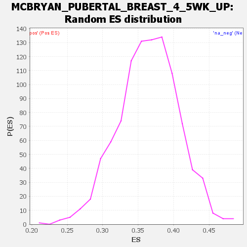

Profile of the Running ES Score & Positions of GeneSet Members on the Rank Ordered List
| Dataset | DGErankName |
| Phenotype | NoPhenotypeAvailable |
| Upregulated in class | na_pos |
| GeneSet | MCBRYAN_PUBERTAL_BREAST_4_5WK_UP |
| Enrichment Score (ES) | 0.6968242 |
| Normalized Enrichment Score (NES) | 1.9135159 |
| Nominal p-value | 0.0 |
| FDR q-value | 0.007949611 |
| FWER p-Value | 0.12 |
| SYMBOL | RANK IN GENE LIST | RANK METRIC SCORE | RUNNING ES | CORE ENRICHMENT | |
|---|---|---|---|---|---|
| 1 | RAB25 | 11 | 14.477 | 0.0404 | Yes |
| 2 | EHF | 24 | 7.579 | 0.0611 | Yes |
| 3 | GATA3 | 26 | 7.476 | 0.0823 | Yes |
| 4 | CLDN4 | 27 | 7.202 | 0.1027 | Yes |
| 5 | PDZK1IP1 | 29 | 6.744 | 0.1218 | Yes |
| 6 | TMPRSS2 | 36 | 5.913 | 0.1382 | Yes |
| 7 | KRT19 | 40 | 5.719 | 0.1542 | Yes |
| 8 | CDH1 | 42 | 5.617 | 0.1701 | Yes |
| 9 | KRT18 | 43 | 5.458 | 0.1856 | Yes |
| 10 | PROM2 | 50 | 5.121 | 0.1998 | Yes |
| 11 | SFRP1 | 54 | 5.001 | 0.2138 | Yes |
| 12 | RIPK4 | 55 | 4.987 | 0.2279 | Yes |
| 13 | CAPG | 72 | 4.662 | 0.2401 | Yes |
| 14 | CLDN8 | 82 | 4.281 | 0.2517 | Yes |
| 15 | SCIN | 85 | 4.212 | 0.2635 | Yes |
| 16 | LAD1 | 96 | 4.069 | 0.2744 | Yes |
| 17 | ESRP1 | 106 | 3.958 | 0.2850 | Yes |
| 18 | TXNDC16 | 115 | 3.847 | 0.2954 | Yes |
| 19 | TNC | 119 | 3.829 | 0.3061 | Yes |
| 20 | TMEM30B | 124 | 3.776 | 0.3166 | Yes |
| 21 | KCNK1 | 132 | 3.694 | 0.3266 | Yes |
| 22 | ANO1 | 154 | 3.548 | 0.3353 | Yes |
| 23 | CD9 | 170 | 3.394 | 0.3439 | Yes |
| 24 | ID2 | 176 | 3.377 | 0.3532 | Yes |
| 25 | PERP | 185 | 3.343 | 0.3621 | Yes |
| 26 | GRHL2 | 189 | 3.339 | 0.3714 | Yes |
| 27 | TGIF1 | 193 | 3.328 | 0.3807 | Yes |
| 28 | THBS2 | 197 | 3.316 | 0.3899 | Yes |
| 29 | ST14 | 204 | 3.288 | 0.3988 | Yes |
| 30 | CNN1 | 211 | 3.262 | 0.4077 | Yes |
| 31 | CLDN7 | 213 | 3.250 | 0.4169 | Yes |
| 32 | APOD | 216 | 3.218 | 0.4259 | Yes |
| 33 | SPINT1 | 227 | 3.162 | 0.4342 | Yes |
| 34 | GIPC2 | 229 | 3.155 | 0.4431 | Yes |
| 35 | KRT8 | 251 | 3.043 | 0.4503 | Yes |
| 36 | NPR3 | 257 | 3.026 | 0.4586 | Yes |
| 37 | TPBG | 311 | 2.892 | 0.4633 | Yes |
| 38 | TACSTD2 | 317 | 2.875 | 0.4711 | Yes |
| 39 | PADI2 | 340 | 2.809 | 0.4776 | Yes |
| 40 | ADAMTS5 | 347 | 2.798 | 0.4852 | Yes |
| 41 | IRX2 | 355 | 2.768 | 0.4926 | Yes |
| 42 | ALDH1A1 | 363 | 2.749 | 0.4999 | Yes |
| 43 | EMB | 366 | 2.745 | 0.5076 | Yes |
| 44 | IRF6 | 388 | 2.689 | 0.5138 | Yes |
| 45 | CRACR2B | 397 | 2.671 | 0.5209 | Yes |
| 46 | FBXO32 | 402 | 2.659 | 0.5282 | Yes |
| 47 | ERBB3 | 417 | 2.618 | 0.5347 | Yes |
| 48 | TP63 | 425 | 2.594 | 0.5416 | Yes |
| 49 | ACTG2 | 435 | 2.581 | 0.5483 | Yes |
| 50 | WWC1 | 476 | 2.508 | 0.5528 | Yes |
| 51 | ATP1A1 | 492 | 2.473 | 0.5588 | Yes |
| 52 | CEACAM1 | 506 | 2.428 | 0.5648 | Yes |
| 53 | ESRP2 | 507 | 2.424 | 0.5717 | Yes |
| 54 | CPT1A | 555 | 2.335 | 0.5752 | Yes |
| 55 | FGFR2 | 566 | 2.308 | 0.5811 | Yes |
| 56 | EZR | 568 | 2.302 | 0.5876 | Yes |
| 57 | TGM2 | 628 | 2.219 | 0.5900 | Yes |
| 58 | PTN | 629 | 2.218 | 0.5963 | Yes |
| 59 | SLCO2A1 | 633 | 2.210 | 0.6023 | Yes |
| 60 | IGFBP6 | 654 | 2.185 | 0.6072 | Yes |
| 61 | IL33 | 712 | 2.117 | 0.6094 | Yes |
| 62 | COTL1 | 786 | 2.033 | 0.6104 | Yes |
| 63 | RND3 | 787 | 2.033 | 0.6161 | Yes |
| 64 | RAB7B | 791 | 2.026 | 0.6217 | Yes |
| 65 | SHROOM3 | 877 | 1.945 | 0.6216 | Yes |
| 66 | MBOAT1 | 902 | 1.919 | 0.6254 | Yes |
| 67 | GAS1 | 925 | 1.899 | 0.6294 | Yes |
| 68 | TMEM158 | 955 | 1.874 | 0.6328 | Yes |
| 69 | SLC44A2 | 956 | 1.874 | 0.6381 | Yes |
| 70 | EPCAM | 963 | 1.872 | 0.6430 | Yes |
| 71 | PLK2 | 974 | 1.861 | 0.6476 | Yes |
| 72 | SESN3 | 990 | 1.851 | 0.6519 | Yes |
| 73 | KRT7 | 1019 | 1.829 | 0.6552 | Yes |
| 74 | F3 | 1024 | 1.825 | 0.6602 | Yes |
| 75 | SPON1 | 1054 | 1.800 | 0.6633 | Yes |
| 76 | MANSC1 | 1076 | 1.787 | 0.6670 | Yes |
| 77 | CLDN3 | 1078 | 1.785 | 0.6720 | Yes |
| 78 | PFN2 | 1123 | 1.751 | 0.6741 | Yes |
| 79 | CD14 | 1230 | 1.679 | 0.6718 | Yes |
| 80 | PTPRK | 1330 | 1.622 | 0.6698 | Yes |
| 81 | DSP | 1333 | 1.620 | 0.6743 | Yes |
| 82 | SPON2 | 1349 | 1.610 | 0.6779 | Yes |
| 83 | HEBP2 | 1443 | 1.564 | 0.6762 | Yes |
| 84 | IRX1 | 1562 | 1.511 | 0.6726 | Yes |
| 85 | PATJ | 1610 | 1.492 | 0.6737 | Yes |
| 86 | CALD1 | 1627 | 1.484 | 0.6769 | Yes |
| 87 | FZD6 | 1647 | 1.473 | 0.6798 | Yes |
| 88 | ACTA2 | 1650 | 1.471 | 0.6839 | Yes |
| 89 | TIMP1 | 1668 | 1.467 | 0.6869 | Yes |
| 90 | ERRFI1 | 1686 | 1.459 | 0.6899 | Yes |
| 91 | EPB41L4B | 1725 | 1.445 | 0.6915 | Yes |
| 92 | FN1 | 1736 | 1.437 | 0.6949 | Yes |
| 93 | SLC2A1 | 1769 | 1.420 | 0.6968 | Yes |
| 94 | VASN | 1926 | 1.366 | 0.6904 | No |
| 95 | NFKB2 | 1980 | 1.341 | 0.6906 | No |
| 96 | RETREG1 | 2022 | 1.318 | 0.6917 | No |
| 97 | CSN3 | 2027 | 1.316 | 0.6951 | No |
| 98 | BECN1 | 2287 | 1.223 | 0.6814 | No |
| 99 | COL7A1 | 2313 | 1.216 | 0.6832 | No |
| 100 | IMPDH2 | 2355 | 1.204 | 0.6839 | No |
| 101 | RPL22 | 2413 | 1.189 | 0.6835 | No |
| 102 | SLC39A6 | 2455 | 1.178 | 0.6841 | No |
| 103 | ARHGAP21 | 2490 | 1.164 | 0.6852 | No |
| 104 | SOX4 | 2794 | 1.072 | 0.6681 | No |
| 105 | PIAS3 | 2833 | 1.060 | 0.6686 | No |
| 106 | CDCP1 | 3140 | 0.975 | 0.6511 | No |
| 107 | SDC4 | 3237 | 0.952 | 0.6474 | No |
| 108 | IKBIP | 3240 | 0.951 | 0.6500 | No |
| 109 | RIPOR2 | 3253 | 0.948 | 0.6519 | No |
| 110 | BEX3 | 3263 | 0.946 | 0.6540 | No |
| 111 | IRAK1 | 3368 | 0.918 | 0.6497 | No |
| 112 | SYNPO | 3392 | 0.914 | 0.6507 | No |
| 113 | MUC15 | 3417 | 0.907 | 0.6517 | No |
| 114 | MAFB | 3487 | 0.888 | 0.6497 | No |
| 115 | ALDOC | 3510 | 0.882 | 0.6507 | No |
| 116 | TNFRSF12A | 3564 | 0.868 | 0.6497 | No |
| 117 | NXN | 3595 | 0.864 | 0.6501 | No |
| 118 | ICE1 | 3677 | 0.845 | 0.6472 | No |
| 119 | ARHGEF3 | 3713 | 0.837 | 0.6472 | No |
| 120 | NHSL1 | 3889 | 0.799 | 0.6379 | No |
| 121 | PREB | 3900 | 0.795 | 0.6395 | No |
| 122 | ZBTB8A | 4059 | 0.760 | 0.6311 | No |
| 123 | SPNS2 | 4151 | 0.738 | 0.6272 | No |
| 124 | TEAD2 | 4155 | 0.737 | 0.6291 | No |
| 125 | MFGE8 | 4272 | 0.710 | 0.6234 | No |
| 126 | RPL37A | 4318 | 0.701 | 0.6224 | No |
| 127 | OCLN | 4388 | 0.685 | 0.6198 | No |
| 128 | PAWR | 4598 | 0.636 | 0.6077 | No |
| 129 | RPS10 | 4643 | 0.625 | 0.6066 | No |
| 130 | BCL6 | 4702 | 0.612 | 0.6045 | No |
| 131 | GAS6 | 4775 | 0.600 | 0.6014 | No |
| 132 | PRLR | 4795 | 0.596 | 0.6018 | No |
| 133 | WDR43 | 4970 | 0.556 | 0.5919 | No |
| 134 | CXCL14 | 5210 | 0.500 | 0.5774 | No |
| 135 | BTN1A1 | 5314 | 0.480 | 0.5719 | No |
| 136 | COL16A1 | 5614 | 0.418 | 0.5533 | No |
| 137 | IGFBP2 | 5680 | 0.406 | 0.5501 | No |
| 138 | CYSTM1 | 5961 | 0.345 | 0.5325 | No |
| 139 | GALNT3 | 5975 | 0.342 | 0.5326 | No |
| 140 | NFIL3 | 6185 | 0.298 | 0.5196 | No |
| 141 | HEY1 | 6260 | 0.283 | 0.5155 | No |
| 142 | POF1B | 6266 | 0.281 | 0.5160 | No |
| 143 | MARCKSL1 | 6423 | 0.252 | 0.5063 | No |
| 144 | PLET1 | 6436 | 0.250 | 0.5063 | No |
| 145 | TRPS1 | 6495 | 0.238 | 0.5031 | No |
| 146 | CNN3 | 6598 | 0.220 | 0.4969 | No |
| 147 | CLDN10 | 6884 | 0.177 | 0.4785 | No |
| 148 | PLPP2 | 6899 | 0.175 | 0.4781 | No |
| 149 | PLA2G7 | 6946 | 0.167 | 0.4755 | No |
| 150 | DKK3 | 6963 | 0.164 | 0.4749 | No |
| 151 | WNT2 | 6984 | 0.159 | 0.4741 | No |
| 152 | GZMA | 6997 | 0.156 | 0.4737 | No |
| 153 | CNTN1 | 7023 | 0.151 | 0.4725 | No |
| 154 | PDLIM2 | 7205 | 0.121 | 0.4608 | No |
| 155 | CDH11 | 7218 | 0.120 | 0.4603 | No |
| 156 | TGFB3 | 7406 | 0.093 | 0.4482 | No |
| 157 | DDR1 | 7476 | 0.084 | 0.4439 | No |
| 158 | PLAT | 7494 | 0.081 | 0.4430 | No |
| 159 | CEMIP2 | 7503 | 0.079 | 0.4427 | No |
| 160 | TMEM40 | 7515 | 0.078 | 0.4421 | No |
| 161 | CD24 | 7561 | 0.072 | 0.4394 | No |
| 162 | ATP6V1B1 | 7598 | 0.066 | 0.4372 | No |
| 163 | RAB17 | 7677 | 0.055 | 0.4321 | No |
| 164 | CYB561 | 7753 | 0.047 | 0.4273 | No |
| 165 | FHDC1 | 7829 | 0.036 | 0.4224 | No |
| 166 | DUSP16 | 8041 | 0.010 | 0.4085 | No |
| 167 | TLE3 | 8071 | 0.007 | 0.4066 | No |
| 168 | FEN1 | 8244 | -0.013 | 0.3952 | No |
| 169 | BOC | 8263 | -0.015 | 0.3940 | No |
| 170 | HDAC11 | 8313 | -0.019 | 0.3908 | No |
| 171 | HTRA1 | 8414 | -0.031 | 0.3843 | No |
| 172 | ID4 | 8589 | -0.050 | 0.3729 | No |
| 173 | ARG2 | 8591 | -0.050 | 0.3730 | No |
| 174 | ATP5IF1 | 8700 | -0.063 | 0.3660 | No |
| 175 | STAMBPL1 | 8713 | -0.064 | 0.3654 | No |
| 176 | AREG | 8824 | -0.077 | 0.3583 | No |
| 177 | LCN2 | 9030 | -0.101 | 0.3450 | No |
| 178 | LALBA | 9054 | -0.103 | 0.3437 | No |
| 179 | PTX3 | 9086 | -0.106 | 0.3420 | No |
| 180 | STC2 | 9126 | -0.110 | 0.3397 | No |
| 181 | FAAP20 | 9159 | -0.113 | 0.3379 | No |
| 182 | SOX9 | 9737 | -0.165 | 0.3001 | No |
| 183 | ZNF704 | 9795 | -0.169 | 0.2968 | No |
| 184 | TUBA4A | 9871 | -0.175 | 0.2923 | No |
| 185 | TNFAIP2 | 10014 | -0.186 | 0.2834 | No |
| 186 | CCK | 10051 | -0.189 | 0.2816 | No |
| 187 | MARK1 | 10106 | -0.193 | 0.2785 | No |
| 188 | ATP2C1 | 10174 | -0.198 | 0.2746 | No |
| 189 | TASOR2 | 10347 | -0.211 | 0.2638 | No |
| 190 | CITED1 | 10992 | -0.257 | 0.2218 | No |
| 191 | SERPINB11 | 11297 | -0.281 | 0.2024 | No |
| 192 | TNFAIP6 | 11503 | -0.297 | 0.1897 | No |
| 193 | ELAPOR1 | 11573 | -0.303 | 0.1860 | No |
| 194 | MYB | 11596 | -0.305 | 0.1854 | No |
| 195 | CAP1 | 11766 | -0.320 | 0.1751 | No |
| 196 | FOXA1 | 11784 | -0.321 | 0.1749 | No |
| 197 | INHBB | 12026 | -0.343 | 0.1598 | No |
| 198 | STARD10 | 12188 | -0.359 | 0.1502 | No |
| 199 | FBLN7 | 12338 | -0.373 | 0.1413 | No |
| 200 | SDC1 | 12381 | -0.376 | 0.1396 | No |
| 201 | ABCC3 | 12608 | -0.400 | 0.1258 | No |
| 202 | KLF5 | 12609 | -0.400 | 0.1269 | No |
| 203 | GDPD1 | 12657 | -0.405 | 0.1249 | No |
| 204 | MKRN1 | 12856 | -0.430 | 0.1130 | No |
| 205 | PLEKHB1 | 12869 | -0.432 | 0.1135 | No |
| 206 | ENAH | 13279 | -0.483 | 0.0877 | No |
| 207 | SFXN3 | 13361 | -0.495 | 0.0837 | No |
| 208 | BSPRY | 13686 | -0.544 | 0.0638 | No |
| 209 | JPT1 | 13707 | -0.547 | 0.0640 | No |
| 210 | CSN1S1 | 13754 | -0.557 | 0.0625 | No |
| 211 | IRX5 | 13982 | -0.598 | 0.0492 | No |
| 212 | KRT14 | 13990 | -0.600 | 0.0504 | No |
| 213 | FIGN | 14019 | -0.607 | 0.0503 | No |
| 214 | SERPINB5 | 14021 | -0.607 | 0.0519 | No |
| 215 | ISYNA1 | 14176 | -0.640 | 0.0435 | No |
| 216 | KIF22 | 14206 | -0.648 | 0.0434 | No |
| 217 | TTPA | 14400 | -0.697 | 0.0326 | No |
| 218 | UPK3A | 14486 | -0.725 | 0.0290 | No |
| 219 | TFAP2C | 14550 | -0.751 | 0.0270 | No |
| 220 | PALLD | 14610 | -0.775 | 0.0253 | No |
| 221 | TRMT1 | 14782 | -0.851 | 0.0163 | No |
| 222 | ATP1A3 | 14827 | -0.875 | 0.0159 | No |
| 223 | RBP1 | 14891 | -0.913 | 0.0143 | No |
| 224 | FIP1L1 | 15057 | -1.054 | 0.0064 | No |
| 225 | COL9A1 | 15196 | -1.353 | 0.0010 | No |
| 226 | RUNX1 | 15276 | -1.947 | 0.0013 | No |
